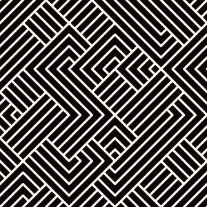

テレンスマリックの映画『TREE OF LIFE』は、その強すぎる”光”とそれにより削られ、見えなくなってしまう実存のせめぎ合いの中に“愛“があったことを伝えてくれる。


快楽への純粋な降伏のもたらす永遠は、あまりに束の間でしか無い。（切ない）霧は、聖域に開いた喪失の穴からジワジワと入り込み、ある時点を境に、一気に存在が見えない程に充満する。

私が５歳ぐらいの頃、教会のホールでバンドが演奏していて、バスドラムの音の波が私の全身を引き起こし、包む
柔らかなオレンジのグラデーションの肌
実存は影である
鼓動、胎動、身体は影として、光を動かすことができる。すなわち、私たちは世界を変えることが出来る。
太陽を直接みてはいけないように、そこに手をかざすことが私たちの最も尊い行為である。
光の中は無だ。熱を受け取る肌がある奇跡を感じなければならない。
心臓が動いている奇跡を思い出さなければいけない。


毛長の絨毯よりも、鋭いがしなる、風を切り裂く音は空洞音に似ている。
痙攣する呼吸を落ち着ける。目を閉じる。全てがありのままに見えて、それに押しつぶされそうな。
巨大な手が空を覆い、首の裏に触れられる。そのひんやりとした感触に沿って、形が浮き上がってくる。
無数の光の粒をかき分けて。目では見えないほどに細かなグリッドの膜、その直線全てに電気が走る、透明の膜が網膜に張り付き、視界を制限している。
目の周りの筋肉は気怠く伸び、その窪みに光の膿が溜まってゆく。




罪悪感を越えるのは喪失と虚無ではなく、外に、前に向かう勇気と優しさである
私は、私の声を痙攣させる堕落をはき出したい
永遠の無制限の幸福は未来に必ずある
その未来に進む以外の道はない
霧を切り開く心の強さと、体のエネルギー、想像力の目を
私たちは、会得しなければいけない。